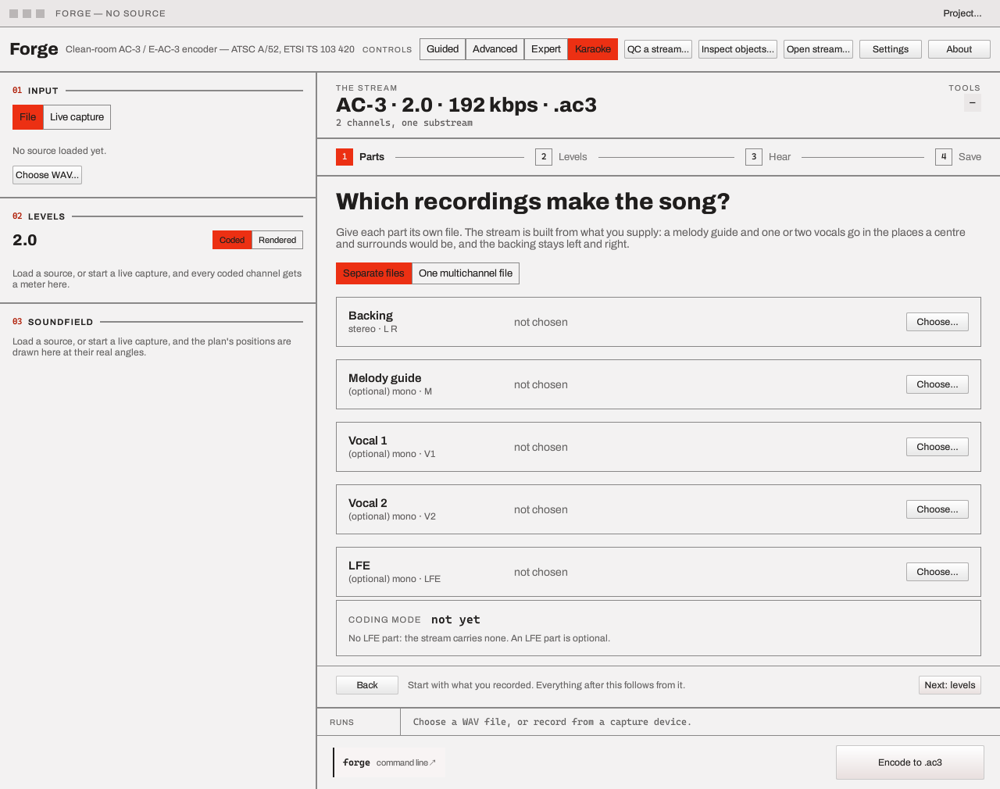

Karaoke¶
This page is the Forge GUI's side. The Karaoke guide covers playing a stream in Hearth, its lyrics, and the command line as well.
Karaoke is the fourth entry of the Controls switch, beside Guided, Advanced and Expert. It builds a karaoke AC-3 stream — ETSI TS 102 366 Annex C — or, if you choose it, a karaoke E-AC-3 one, from the recordings a backing track is made of, and lets you hear it the way a singer's player will decode it before you save it.
Like Guided, it is a wrapper over the same draft the other
tiers edit: the parts are loaded as sources, the coding mode is the bed,
the service is bsmod 7, and each coded channel is an assignment. Switch to Expert afterwards and
every field it set is there, and the command line the last step shows writes the same bytes.
What a karaoke stream is¶
A karaoke stream is an ordinary AC-3 main service with bsmod 7 and a coding mode above 1/0. Its
channels are not speakers but parts (Annex C, Table C.2.1):
| Mode | Parts, in coded order |
|---|---|
| 3/0 | L M R |
| 2/1 | L R V1 |
| 3/1 | L M R V1 |
| 2/2 | L R V1 V2 |
| 3/2 | L M R V1 V2 |
L and R are the backing music; M is a guide melody where a centre would be; V1 and V2 are one or two vocals where the surrounds would be. A player that does not know about karaoke plays them where they are coded, so the vocals come from the rear speakers.
An E-AC-3 stream carries the same service type (bsmod 7 above 1/0, one independent substream,
no object layer) with the parts in the same places, but ETSI TS 102 366 defines no
reproduction for it: Annex C is AC-3's. A decoder that applies Annex C's tables to it does so by
analogy, as Hearth, forge and Dolby's reference decoder do; a decoder that does not reproduce it
plays the vocals from the surrounds, as a plain surround player plays an AC-3 one. AC-3 is the
format Annex C defines and the one the flow writes unless you choose another.
The four steps¶
1 · Parts. Give each part its own file: a stereo Backing, and optionally a mono Melody
guide, Vocal 1, Vocal 2 and LFE. The page shows the coding mode the parts make and
why, and a list of checks. Or choose One multichannel file whose speakers are named by its WAV
channel mask (L R C, L R S, L R C S, L R Ls Rs or L R C Ls Rs, each with an LFE if it
has one).

The Parts step as the flow opens. The karaoke guide has it with the example's parts loaded.
The LFE part is the stream's low-frequency effects channel. It chooses no mode (a backing and
an LFE are still nothing to sing along to) and it is coded after the full-bandwidth channels, so a
3/2 stream with one is a 5.1 bed. The window band-limits it with a 120 Hz low-pass, as it does any
channel assigned to the LFE (Source assignment); forge encode writes a
channel mapped to LFE as it is given, so give the command line a file that is already
band-limited if you want its bytes to match the window's. A karaoke reproduction passes the LFE
through (L, C, R and then the LFE, scaled down with them), and a stereo fold leaves it out.
- A file that cannot be used is named, not fixed: a backing that is not stereo, a part that is not one channel, a vocal 2 without a vocal 1, a backing with nothing to sing along to, or a multichannel file that does not say which speakers it has.
- A part at another sample rate or of another length is a warning that says what will happen: it is resampled to the backing's rate, or the shorter part holds its last sample for the rest of the programme.
- Next stays off until the parts can be built.
2 · Levels. The two levels Annex C reads from the stream: the centre level (cmixlev),
which the aware decoder applies to the melody guide in a stereo fold, and the surround level
(surmixlev), which it applies to the vocals. A level the mode does not carry is greyed, with the
reason beside it.
3 · Hear. The stream is encoded to a temporary file and opened in the stream player, so what you hear is the encoded stream, not your source files. Choose how it is played:
- As coded — the channels as the stream codes them; the vocals come from the rear speakers.
- Aware — a karaoke-aware decoder (Table C.2.2): L, C and R, with the vocals at the surround level you chose.
- Capable — a karaoke-capable decoder (Table C.2.3), with the singer's choice of None, V1, V2 or Both. A single vocal sits in the centre with the melody; Both is V1 on the left and V2 on the right.
Under Capable, a slider for each part (Melody, Vocal 1, Vocal 2) sets its level
against Table C.2.3 (Annex C.2.3's "additional flexibility"): 0 dB is the table as it stands, up to
12 dB louder, and the bottom of the control is off. They are the span and units of Hearth's
sliders and of forge decode karaoke-melody=. Raising one part far enough lowers the others, so that
no speaker is driven past full scale. A part the stream does not have has no level, and Reset
levels puts all three back. Moving one decodes the stream again, as choosing the vocals does.
A What plays table says which parts reach which speaker under the choice made (a part pulled to off is left out of it). If a part sounds wrong, go back to Levels.
4 · Save. Choose the format (AC-3, the default, or E-AC-3), the file type (the raw
.ac3 or .ec3 stream, or Matroska, MP4 or MPEG-TS, as the Format tab offers) and the bit
rate, see the equivalent forge encode … (or forge eac3-encode …) command, and encode. The
save picker and the run strip are the ones Guided uses; the stream built for Hear is not a run, and
only what you save is. Choosing the format loads the parts again under it, and Hear then plays
the stream in that format under the same three listenings and part levels.
The bit rate starts where the mode's width wants it (384 kbps for 3/2, 320 for 3/1 and 2/2, 256 for
3/0 and 2/1) and stays where you set it. A Lyrics row names the lyrics file that goes beside
the stream: one of the backing's name beside it is offered (an .lrc, else an .srt, .ass or
.kar), you can choose another or remove it, and the stream is saved with the same name and
.lrc, where Hearth looks for lyrics. Whatever the file's format, what is written is UTF-8 LRC,
with a duet's singers, the word times the file has, and the silence between a subtitle file's cues
marked, which is the one format Hearth reads and sends to a network sink. A file in a code page
(Latin-1, Shift-JIS, Windows-1255) is named on the row when it is chosen, with a Code page list
under it: choose the page the file was written in, and the first lines are shown as that page reads
them, so a wrong choice is seen before anything is written. Nothing is chosen for you and nothing is
guessed; with no page chosen none is written, and the stream is saved as usual. The pages are
Windows 1250 to 1258 and 874, ISO 8859-1, -2 and -15, DOS 437 and 850, KOI8-R and -U, Shift-JIS,
EUC-JP, GBK, GB18030, Big5 and EUC-KR, converted by the operating system. A lyrics file already
there is left as it is. forge encode does the same with lyrics= and, for a code page,
lyrics-encoding=.
The start offsets and trims you set on the parts stay when you add, replace or remove a part.
A project of the parts¶
Project…, Save project… keeps which file is which part, the levels, the bit rate and how
the stream is heard in a .forgeproj, and Open project… (or dropping it on the window)
puts the flow back as it was; see Projects. The
Auld Lang Syne example
is four generated parts, a project that opens them here, the stream they make and its words.
The same from the command line¶
The command the last step shows is the whole of it, for example a 3/1 stream (backing, melody, one vocal):
forge encode backing.wav out.ac3 320 L,C,R,Cs src=melody.wav src=lead.wav map=0.0:L,0.1:R,1.0:C,2.0:Cs bsmod=voiceover
bsmod=voiceover is the bsmod 7 code: with a coding mode above 1/0 it is the karaoke main
service. Hearth plays the result with the same three
reproductions.
Stream player¶
Open stream decodes a karaoke stream as coded unless told otherwise, which
is what the player has always done. Its summary line says karaoke 3/1, and the player reports
that the stream is karaoke and which layout it codes; the Karaoke flow's Hear step is what sets
the reproduction, the vocals and the part levels.
What it does not do¶
- Timing or editing lyrics. Nothing here makes or times a lyrics file; it puts one you have beside the stream, in the one format Hearth reads. Styling and positions in an ASS script are not carried.
- AC-4. Its specification gives a karaoke stream no mode, and the flow does not offer it.